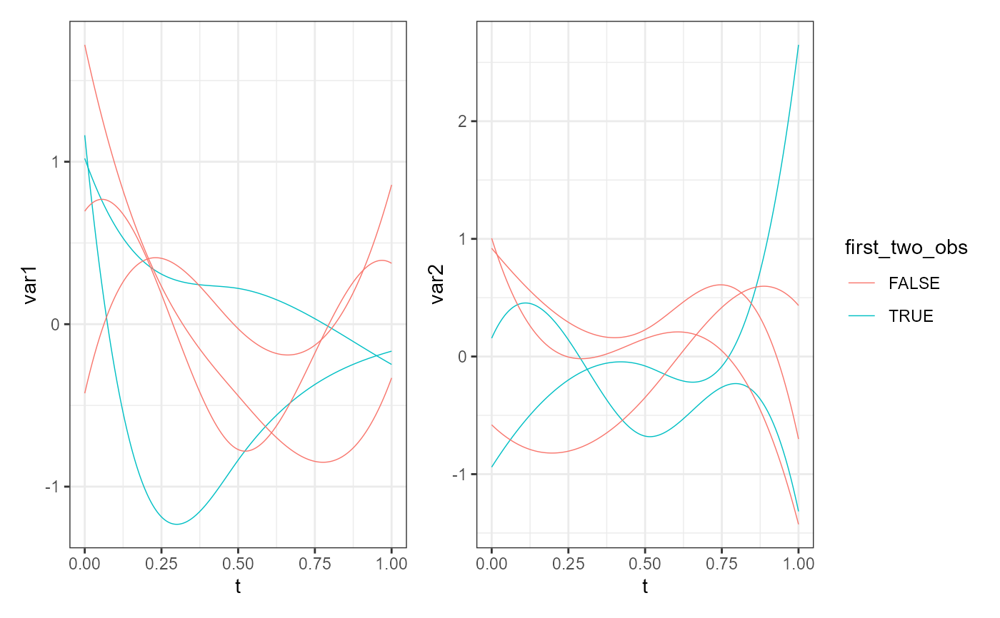

Plot an object of class mfd using ggplot2
and patchwork.
plot_mfd(
mfdobj,
mapping = NULL,
data = NULL,
stat = "identity",
position = "identity",
na.rm = TRUE,
orientation = NA,
show.legend = NA,
inherit.aes = TRUE,
type_mfd = "mfd",
y_lim_equal = FALSE,
...
)A multivariate functional data object of class mfd.
Set of aesthetic mappings additional
to x and y as passed to the function
ggplot2::geom:line.
A data.frame providing columns
to create additional aesthetic mappings.
It must contain a factor column "id" with the replication values
as in mfdobj$fdnames[[2]].
If it contains a column "var", this must contain
the functional variables as in mfdobj$fdnames[[3]].
See ggplot2::geom_line.
See ggplot2::geom_line.
See ggplot2::geom_line.
See ggplot2::geom_line.
See ggplot2::geom_line.
See ggplot2::geom_line.
A character value equal to "mfd" or "raw". If "mfd", the smoothed functional data are plotted, if "raw", the original discrete data are plotted.
A logical value. If TRUE, the limits of the y-axis
are the same for all functional variables.
If FALSE, limits are different for each variable.
Default value is FALSE.
See ggplot2::geom_line.
A plot of the multivariate functional data object.
library(funcharts)
library(ggplot2)
mfdobj <- data_sim_mfd()
ids <- mfdobj$fdnames[[2]]
df <- data.frame(id = ids, first_two_obs = ids %in% c("rep1", "rep2"))
plot_mfd(mapping = aes(colour = first_two_obs),
data = df,
mfdobj = mfdobj)
